لایه اول: Mean ≈ 0.000 (عدم یادگیری)
لایه آخر: Mean ≈ 0.604 (فعال)
نتیجه: وقوع Vanishing Gradient کلاسیک. گرادیان در مسیر بازگشت به دلیل مشتق کوچک Sigmoid (حداکثر 0.25) در هر مرحله کوچکتر شده و در لایههای ابتدایی عملاً صفر میشود.
لایه اول: Mean ≈ 1.1
لایه آخر: Mean ≈ 2.7
نتیجه: شبکه سالم. نسبت لایه اول به آخر (~0.4) نشاندهنده جریان مناسب گرادیان. ReLU با حذف اشباع در ناحیه مثبت، از محو شدن گرادیان جلوگیری میکند.
در تابع Sigmoid، برای ورودیهای بزرگ، مشتق به شدت افت میکند:
σ'(x) = σ(x)(1−σ(x))
وقتی لایهها عمیق میشوند، این مقادیر کوچک در هم ضرب شده و گرادیان در لایههای پایین ناپدید میشود. ReLU با مشتق ثابت ۱ در ناحیه مثبت، زنجیره را حفظ میکند.
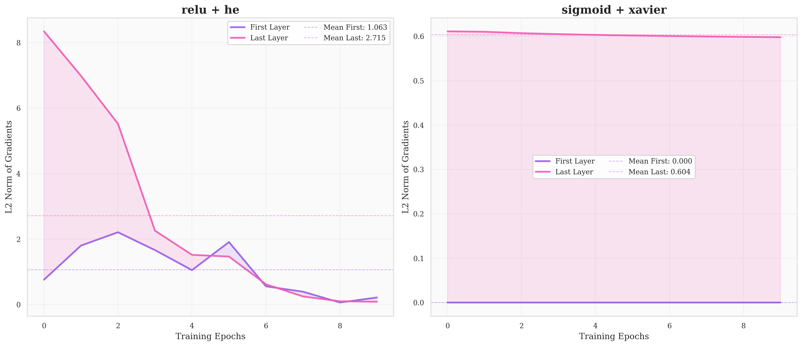
| تنظیمات | رفتار نسبت (First/Last) | نتیجهگیری نهایی |
|---|---|---|
| ReLU + He | شروع از ~۰ ← صعودی ← در Epoch 8 به ۲.۳-۲.۵ | رفع Vanishing؛ تعادل گرادیان |
| Sigmoid + Xavier | خط افقی چسبیده به صفر (ثابت) | Vanishing شدید؛ لایههای ابتدایی هرگز یاد نمیگیرند. |
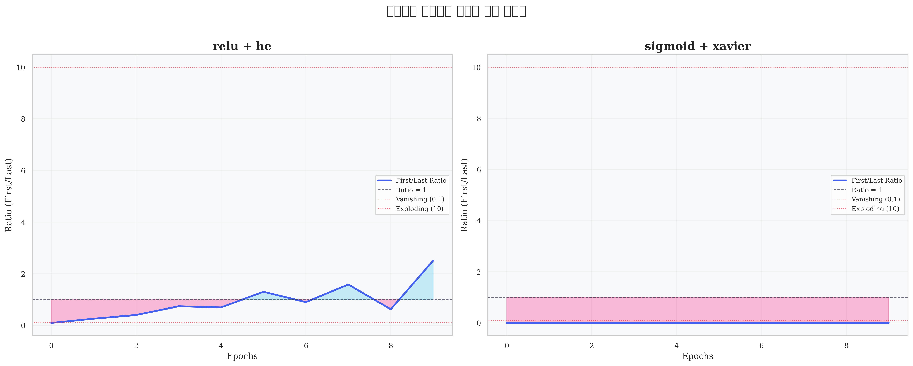
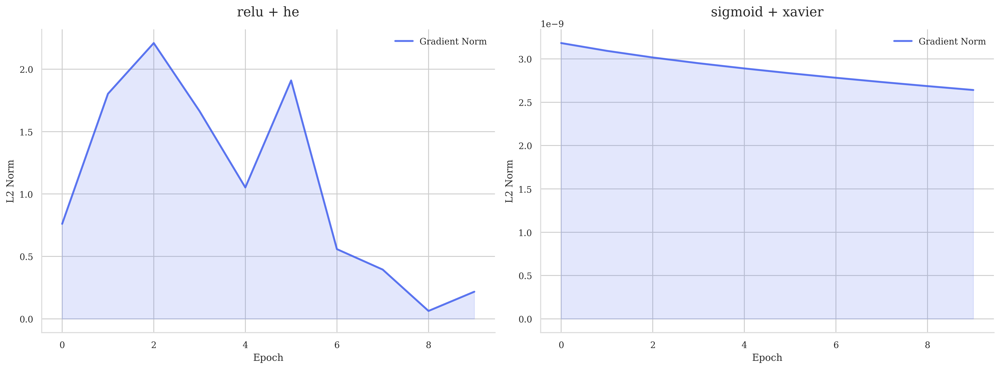
لایه اول: گرادیانها در انتها کوچک میشوند اما هرگز به صفر مطلق نمیرسند. این کاهش نشانه Convergence است.
لایه آخر: توزیع سالم در مقیاس [0.01,0.03]. نسبت First/Last حتی از ۱ فراتر میرود.
لایه اول: سقوط آزاد گرادیان به محدوده ۱۰⁻¹¹. سختافزار تغییری حس نمیکند.
لایه آخر: توزیع نویزی، لایههای قبل منجمد شدهاند.
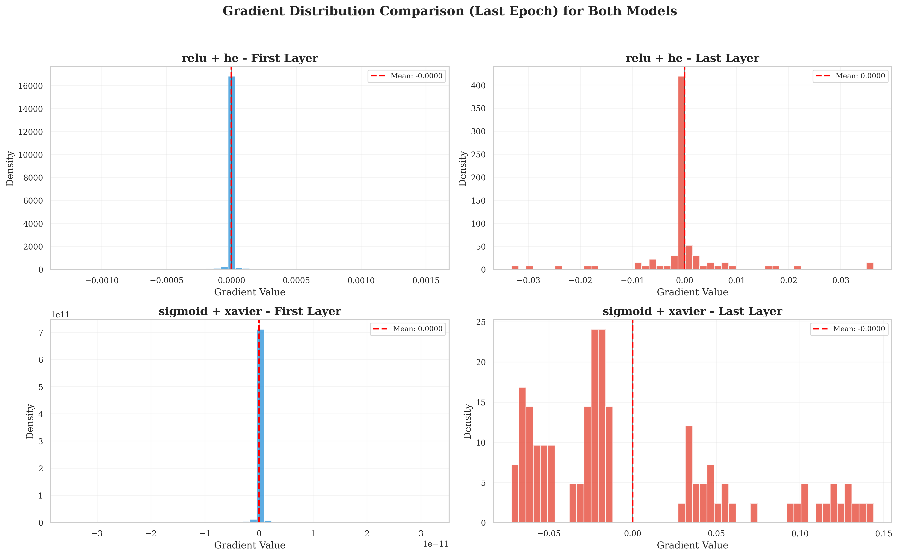
| جنبه | ReLU + He | Sigmoid + Xavier | برنده |
|---|---|---|---|
| جریان به لایههای اول | خوب (رنگ زنده) | تقریباً صفر | ✅ ReLU |
| پویایی در طول آموزش | نوسان طبیعی | ایستایی کامل | ✅ ReLU |
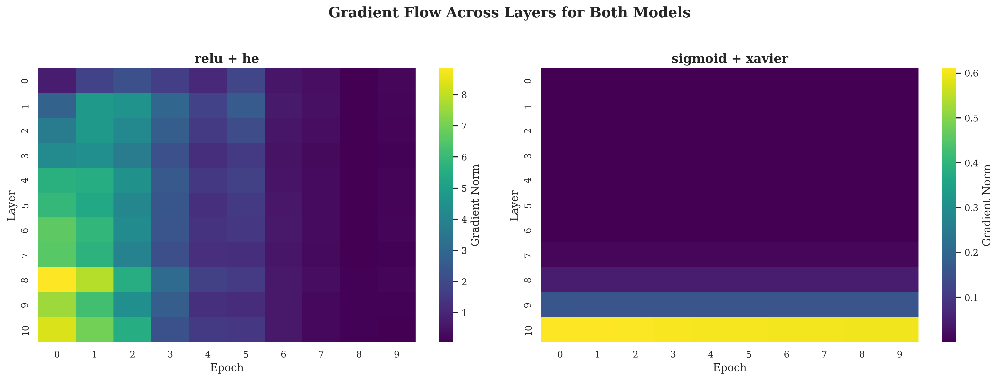
| Epoch | ReLU + He (واریانس) | Sigmoid + Xavier (واریانس) | شکاف قدرت |
|---|---|---|---|
| 0 | ~0.700 | ~0.00388 | 180 برابر |
| 4 | ~0.070 | ~0.00380 | 18 برابر |
| 8 | ~0.015 | ~0.00372 | 4 برابر (در حال همگرایی) |
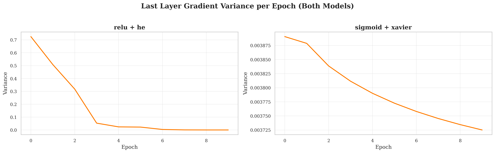
| Epoch | ReLU + He (Max) | Sigmoid + Xavier (Max) | تحلیل |
|---|---|---|---|
| 0 | ~4.45 | ~0.146 | 30 برابر قویتر |
| 4 | ~1.05 | ~0.145 | تعدیل یادگیری |
| 8 | ~0.08 | ~0.144 | ReLU همگرا، Sigmoid مرده |
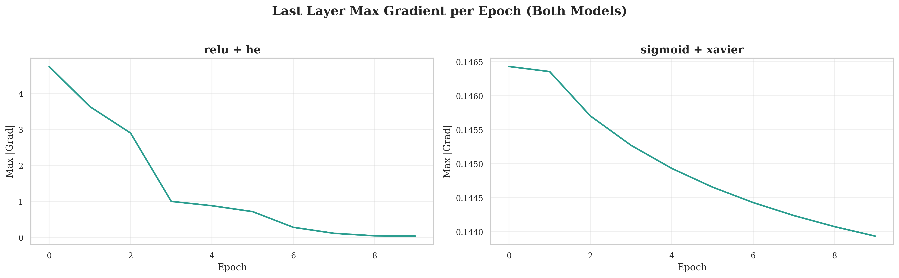
| Epoch | ReLU L1 Max | Sigmoid L1 Max | اختلاف |
|---|---|---|---|
| 0 | ~4.5e-3 | ~4.4e-11 | 100 میلیون برابر |
| 2 (Peak) | ~1.6e-2 | ~4.3e-11 | ~1 میلیارد برابر |
| 8 | ~1.5e-3 | ~3.6e-11 | 40 میلیون برابر |
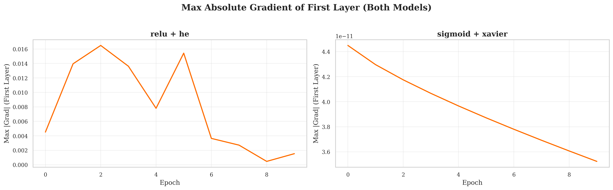
نشانه همگرایی هوشمند، تغییرات ظریف، اسپارسیتی.
فریب آماری: کل گرادیانها در 10⁻¹¹ هستند، پس این 1% نشانه حیات نیست.
| Epoch | ReLU + He (%) | Sigmoid + Xavier (%) |
|---|---|---|
| 0 | ~78.9% | ~1.00% |
| 4 | ~77.5% | ~1.00% |
| 8 | ~79.2% | ~1.00% |
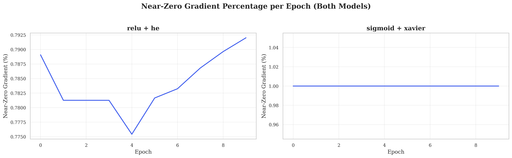
| شاخص | ReLU + He | Sigmoid + Xavier |
|---|---|---|
| میانگین نسبت | ~0.94 | ~0.14 |
| قدرت حفظ سیگنال | بسیار بالا (94%) | بسیار پایین (13%) |
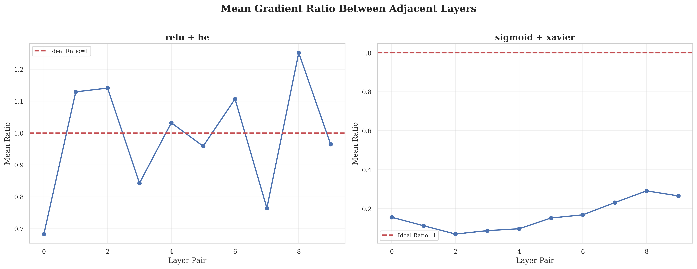
ابتدا 16% تغییر → انتها 4.5% (بلوغ، یادگیری جسورانه)
نسبت ~0.0001 (۵۰۰ برابر ضعیفتر، عملاً ثابت)
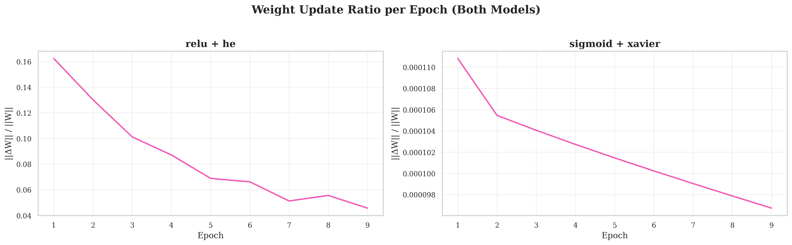
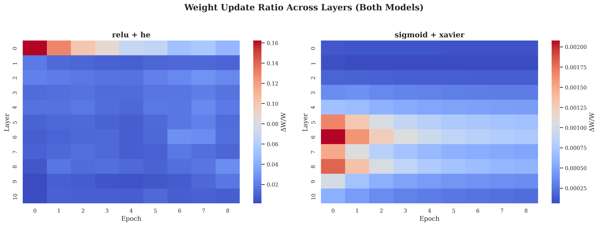
| Epoch | ReLU + He | Sigmoid + Xavier |
|---|---|---|
| 2 | ~0.7 | ~0.5 |
| 6 | ~4.0 | ~2.0 |
| 10 | ~6.0 | ~3.0 |
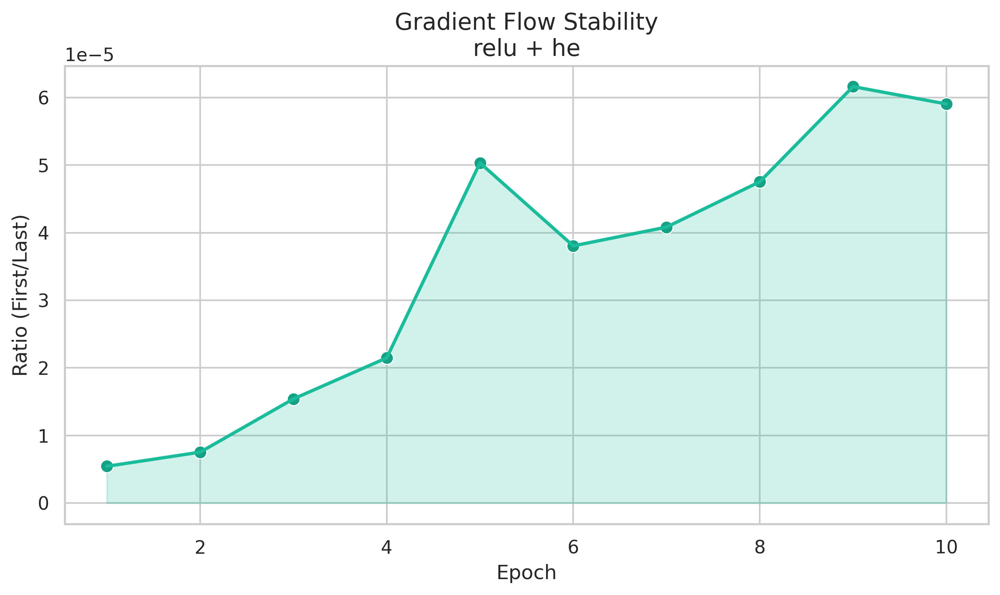
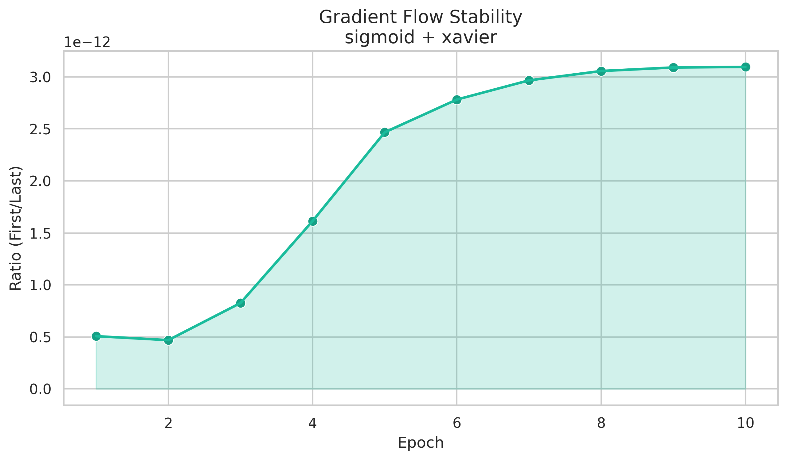
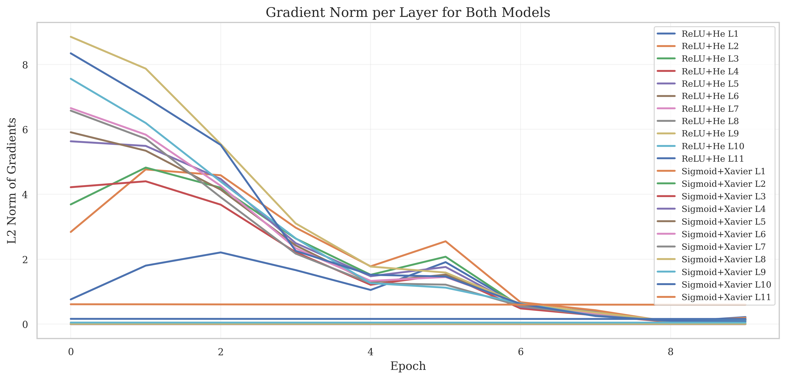
| پارامتر | Sigmoid + Xavier | ReLU + He |
|---|---|---|
| وضعیت لایههای ابتدایی | مرگ مغزی (Vanished) | فعال و پویا |
| انتقال سیگنال | تضعیف 13% | انتقال 94% |
| پتانسیل آموزش عمیق | محدود به ۳-۴ لایه | نامحدود (Scaling) |
💡 سخن پایانی: نتایج این آزمایش ثابت کرد که معماری صحیح (انتخاب تابع فعالساز و مقداردهی اولیه) اهمیت بیشتری از سختافزار یا داده دارد. ReLU + He با حفظ پایداری عددی، اجازه میدهد "دانش" از لایههای خروجی به عمیقترین نقاط نفوذ کند؛ مزیتی که Sigmoid را به تاریخ سپرد.